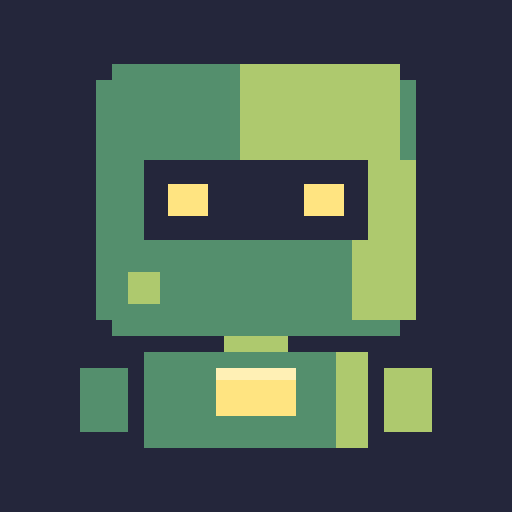
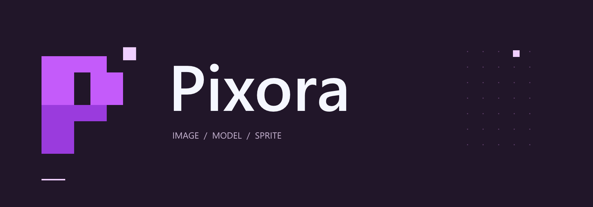
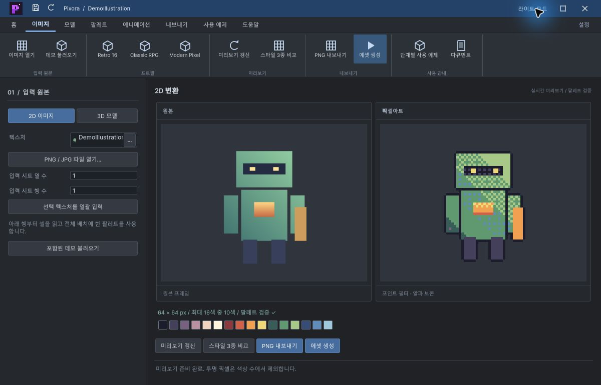
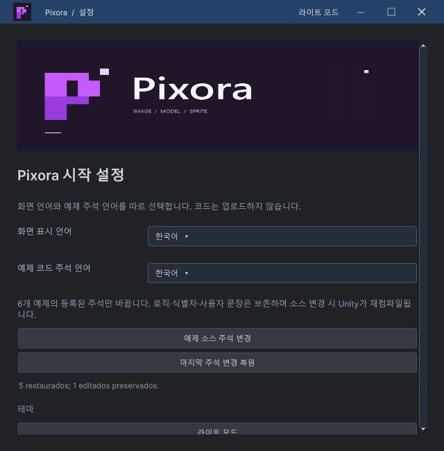
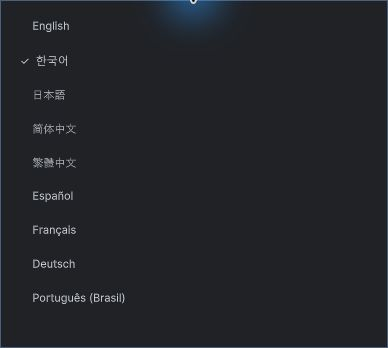
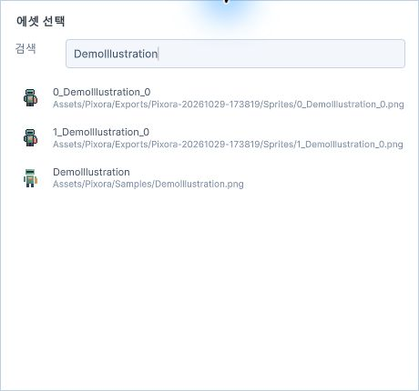

Tracefolio REPORTS & ISSUES
Tracefolio REPORTS & ISSUES
턴룸 › Pixora수정사항Pixora — Affinity 로고와 공통 설정·선택 팝업
구현·실행 검증·프로젝트 푸시 완료다른 프로젝트 로고와 비교해 보라 계열 로고를 Affinity에서 제작했습니다. README·제목줄·설정 화면에 같은 로고를 적용하고 언어 설정과 선택 팝업을 정리했습니다.

Affinity 3.3.1.4940에서 실제 벡터 도형과 글자로 제작했습니다. 편집 가능한 심볼·가로형 .af 원본, Affinity PNG 출력, 다시 제작 가능한 CLI job과 작성 스크립트를 프로젝트 Design/Brand에 보관했습니다. README와 Unity는 같은 PNG를 사용합니다.
기존 프로젝트와 색상 비교
로컬 원본을 직접 열어 Design Data Table 초록·민트, Git Chunk 파랑·청록, MOA 코럴·주황, CodeAssist 노랑, Fantasya 금색, EngineMigrator 회색, WindowsFolderSize 파랑을 확인했습니다. 이들과 구분되는 보라 #C45BFA·#9A3BDD, 연보라 #F0CFFF, 짙은 자주 #211629를 선택했습니다. 확인하지 못한 모든 프로젝트의 색상까지 중복이 없다고 주장하지 않습니다.
픽셀 격자에서 만든 P와 떨어진 한 픽셀로 이미지·모델을 스프라이트로 만드는 도구의 성격을 표현했습니다. 제목줄에는 26px 심볼, 설정에는 가로형 로고, README에는 같은 가로형을 사용합니다. UI 로고는 Bilinear와 무압축·밉맵 끄기로 표시하고 스프라이트 출력의 Point 설정과 분리했습니다.
설정 창과 팝업까지 적용


언어 선택을 제목줄에서 제거하고 설정 창으로 모았습니다. Studio 최소화 버튼은 제거하고 최대화·닫기는 유지했습니다. 설정 창에도 공통 프레임과 라이트·다크 입력 디자인을 적용했습니다.


언어 목록은 운영체제 기본 메뉴 대신 공통 테마 팝업으로 열립니다. 에셋 선택은 검색·썸네일·경로 목록을 제공합니다. 실제 검색창에서 DemoIllustration을 입력해 결과를 줄이고 샘플을 선택했습니다. 설정에서 영어로 전환되어 각 창이 갱신되는 것을 확인한 뒤 한국어로 복원했습니다.
검증 근거
- Unity 6000.0.83f1 / Windows에서 컴파일과 화면 확인을 수행했습니다.
- 최종 자동 검증 2,366개 항목 통과: 2026-10-29 20:46:10 KST. 여섯 실제 예제 흐름과 아홉 언어를 포함합니다.
- 심볼 PNG 512×512 / 3,908바이트, 가로형 PNG 1600×560 / 24,066바이트. 파일 디코딩·크기·바이트·SHA-256과 Design 원본 PNG/Unity 적용 PNG 동일성을 확인했습니다.
- Unity에서 라이트·다크 로고, 설정 제목줄, 언어 목록 표시·변경, 에셋 검색·선택, Studio 최소화 제거를 실제 확인했습니다.
- 문서 10개 장·5개 로컬 이미지와 탐색 스크립트 검증, git diff 공백 검사 통과.
- 프로젝트 커밋 9e4b770: GitHub main 푸시 및 로컬·원격 커밋 일치 확인.
- 결과 근거: Artifacts/BrandVerification.json, Artifacts/TutorialVerification.json, Design/Brand/README.md.
확인 범위와 도구
XERJ: 실패 — 노드가 실행 중이지 않음을 확인했고 rg·현재 소스로 보완했습니다.
Affinity 전용 CLI와 실제 Affinity SDK로 도형·문자를 만들고 수정했습니다. SDK 파일·네트워크 추가 권한은 켜지 않았으며 원본 저장과 PNG 내보내기는 Affinity UI에서 수행했습니다. 로컬 MCP 활성화는 사용자의 명시적 확인 후 진행했습니다. CLI 프로토콜·문서 조회 수정은 별도 Affinity CLI 프로젝트 보고서로 분리했습니다.
다른 OS·Unity 버전·디스플레이 배율은 미확인입니다. 새 선택 팝업의 마우스 검색·선택은 검증했으며 키보드 전용 전체 탐색은 검증하지 않았습니다. 아카이브 HTML은 빌드와 링크·필터 스크립트로 검증하며 인터넷 배포는 이번 작업에 포함하지 않습니다.
시간 기록
제안 시간: 15~25분. 시작 2026-10-29 20:25:02 KST. 실제 소요 25분 32초, 완료 기록 2026-10-29T20:50:34+09:00 KST. 프로젝트 푸시와 보고서 원본 작성까지이며 HTML 빌드·아카이브 동기화 종료 시각은 최종 채팅에 별도 기록합니다.